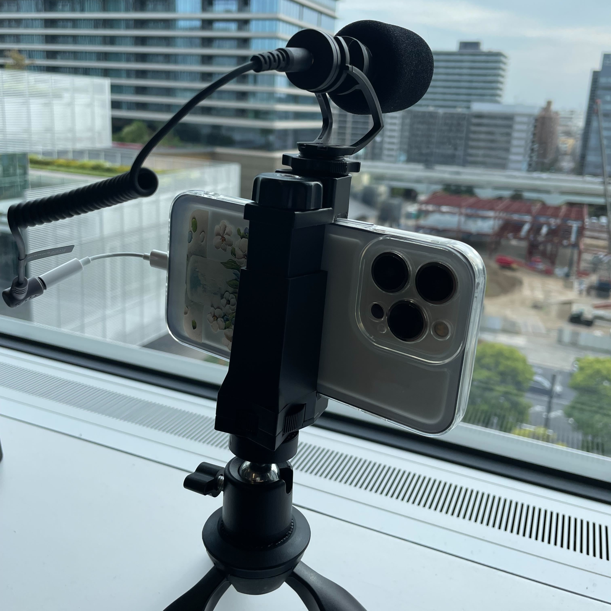
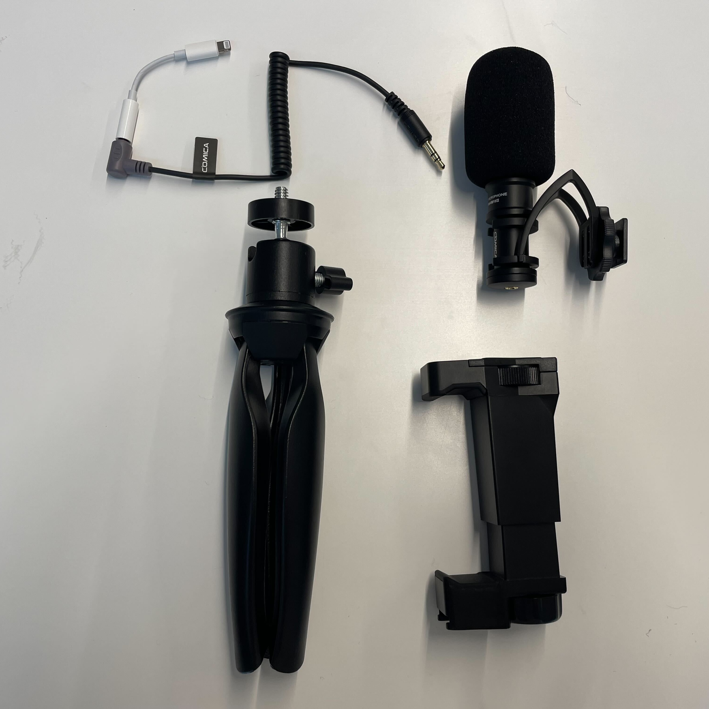

IoTについてインタビュー動画作製
IoTについて
IoTとは
Internet of things の略
収集したデータを分析し、分析した結果を機械にフィードバックしたり、
データを機器の制御に利用するなど高度に分析することで新たな価値を見出すことが目的
IoTに必要な4要素と仕組み
①もの（デバイス）
②センサー
③通信手段（ネットワーク）
④可視化する情報処理（アプリケーション）
IoTにできること
データの収集 ー クラウドに収集する
可視化 ー 収集した情報をアプリケーションなどで見えるようにする
制御 ー 遠隔操作など
最適化 ー 人工知能などを利用すれば、最適な処理
自律性 ー 人の手が必要ない
Iotの事例
スマート家電・シェアサイクル・遠隔餌やり
IoTの構造(学生証の例)
所有者 ー サービスを提供する会社
サービス ー 出席を管理する
管理オブジェクト ー 学生証
インタビュー
動画作成
 
左：組み立て 右：分解
[point ㌽]
・作業時から撮っておく
・画角広めで、尋問のようにならないようにする
・マイクは正面で音を拾うため、相手の正面に設置